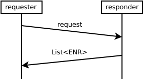

slug: 34 title: 34/WAKU2-PEER-EXCHANGE name: Waku2 Peer Exchange status: draft category: Standards Track tags: waku/core-protocol editor: Hanno Cornelius hanno@status.im contributors:
- Daniel Kaiser danielkaiser@status.im
Abstract
This document specifies a simple request-response peer exchange protocol. Responders send information about a requested number of peers. The main purpose of this protocol is providing resource restricted devices with peers.
Protocol Identifier
/vac/waku/peer-exchange/2.0.0-alpha1
Background and Motivation
It may not be feasible, on resource restricted devices, to take part in distributed random sampling ambient peer discovery protocols, such as 33/WAKU2-DISCV5. The Waku peer discovery protocol, specified in this document, allows resource restricted devices to request a list of peers from a service node. Network parameters necessary to connect to this service node COULD be learned from a static bootstrapping method or using EIP-1459: Node Discovery via DNS. The advantage of using Waku peer exchange to discover new peers, compared to relying on a static peer list or DNS discovery, is a more even load distribution. If a lot of resource restricted nodes would use the same service nodes as relay or store nodes, the load on these would be very high. Heavily used static nodes also add a centralized element. Downtime of such a node might significantly impact the network.
However, the resource efficiency of this protocol comes at an anonymity cost, which is explained in the Security/Privacy Considerations section. This protocol SHOULD only be used if 33/WAKU2-DISCV5 is infeasible.
Theory and Protocol Semantics
The keywords “MUST”, “MUST NOT”, “REQUIRED”, “SHALL”, “SHALL NOT”, “SHOULD”, “SHOULD NOT”, “RECOMMENDED”, “MAY”, and “OPTIONAL” in this document are to be interpreted as described in 2119.
The peer exchange protocol, specified in this document, is a simple request-response protocol. As Figure 1 illustrates, the requesting node sends a request to a peer, which acts as the responder. The responder replies with a list of ENRs as specified in WAKU2-ENR. The multiaddresses used to connect to the respective peers can be extracted from the ENRs.

In order to protect its anonymity, the responder MUST NOT provide peers from its actively used peer list as this opens pathways to Neighbourhood Surveillance attacks, as described in the Security/Privacy Considerations Section. The responder SHOULD provide a set of peers that has been retrieved using ambient peer discovery methods supporting random sampling, e.g. 33/WAKU2-DISCV5. This both protects the responder's anonymity as well as helps distributing load.
To allow for fast responses, responders SHOULD retrieve peers unsolicited (before receiving a query) and maintain a queue of peers for the purpose of providing them in peer exchange responses. To get the best anonymity properties with respect to response peer sets, responders SHOULD use each of these peers only once.
To save bandwidth, and as a trade off to anonymity, responders MAY maintain a larger cache of exchange peers and randomly sample response sets from this local cache. The size of the cache SHOULD be large enough to allow randomly sampling peer sets that (on average) do not overlap too much. The responder SHOULD periodically replace the oldest peers in the cache. The RECOMMENDED options for the cache size are described in the Implementation Suggestions Section.
Requesters, in the context of the specified peer exchange protocol, SHOULD be resource restricted devices. While any node could technically act as a requester, using the peer exchange protocol comes with two drawbacks:
- reducing anonymity
- causing load on responder nodes
Wire Format Specification
syntax = "proto3";
message PeerInfo {
bytes enr = 1;
}
message PeerExchangeQuery {
uint64 num_peers = 1;
}
message PeerExchangeResponse {
repeated PeerInfo peer_infos = 1;
}
message PeerExchangeRPC {
PeerExchangeQuery query = 1;
PeerExchangeResponse response = 2;
}
The enr field contains a Waku ENR as specified in WAKU2-ENR.
Requesters send a PeerExchangeQuery to a peer.
Responders SHOULD include a maximum of num_peers PeerInfo instances into a response.
Responders send a PeerExchangeResponse to requesters
containing a list of PeerInfo instances, which in turn hold an ENR.
Implementation Suggestions
Discovery Interface
Implementations can implement the libp2p discovery interface:
Exchange Peer Cache Size
The size of the (optional) exchange peer cache discussed in
Theory and Protocol Semantics
depends on the average number of requested peers,
which is expected to be the outbound degree of the underlying
libp2p gossipsub
mesh network.
The RECOMMENDED value for this outbound degree is 6 (see parameter D in 29/WAKU2-CONFIG).
It is RECOMMENDED for the cache to hold at least 10 times as many peers (60).
The RECCOMENDED cache size also depends on the number of requesters a responder is expected to serve within a refresh cycle. A refresh cycle is the time interval in which all peers in the cache are expected to be replaced. If the number of requests expected per refresh cycle exceeds 600 (10 times the above recommended 60), it is RECOMMENDED to increase the cache size to at least a tenth of that number.
Security Considerations
Privacy and Anonymity
The peer exchange protocol specified in this document comes with anonymity and security implications. We differentiate these implications into the requester and responder side, respectively.
Requester
With a simple peer exchange protocol, the requester is inherently susceptible to both neighbourhood surveillance and controlled neighbourhood attacks.
To mount a neighbourhood surveillance attack, an attacker has to connect to the peers of the victim node. The peer exchange protocol allows a malicious responder to easily get into this position. The responder connects to a set of peers and simply returns this set of peers to the requester.
The peer exchange protocol also makes it much easier to get into the position required for the controlled neighbourhood attack: A malicious responder provides controlled peers in the response peer list.
More on these attacks may be found in our research log article.
As a weak mitigation the requester MAY ask several peers and select a subset of the returned peers.
Responder
Responders that answer with active mesh peers are more vulnerable to a neighbourhood surveillance attack. Responding with the set of active mesh peers allows a malicious requester to get into the required position more easily. It takes away the first hurdle of the neighbourhood surveillance attack: The attacker knows which peers to try to connect to. This increased vulnerability can be avoided by only responding with randomly sampled sets of peers, e.g. by requesting a random peer set via 33/WAKU2-DISCV5. (As stated in the Theory and Protocol Semantics Section, these peer sets SHOULD be retrieved unsolicitedly before receiving requests to achieve faster response times.)
Responders are also susceptible to amplification DoS attacks.
Requesters send a simple message request which causes responders to
engage in ambient peer discovery to retrieve a new random peer set.
As a mitigation, responders MAY feature a seen cache for requests and
only answer once per time interval.
The exchange-peer cache discussed in Theory and Protocol Semantics Section
also provides mitigation.
Still, frequent queries can tigger the refresh cycle more often.
The seen cache MAY be used in conjunction to provide additional mitigation.
Further Considerations
The response field contains ENRs as specified in WAKU2-ENR. While ENRs contain signatures, they do not violate the Waku relay no-sign policy, because they are part of the discovery domain and are not propagated in the relay domain. However, there might still be some form of leakage: ENRs could be used to track peers and facilitate linking attacks. We will investigate this further in our Waku anonymity analysis.
Copyright
Copyright and related rights waived via CC0.